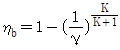
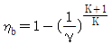
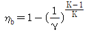
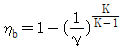
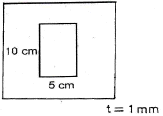
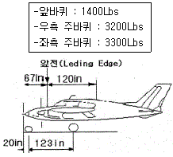

항공산업기사 (2007-09-02 기출문제)
1과목: 항공역학
1. 유체흐름을 쉽게 해석하기 위하여 이상유체(IDEALFLUID)를 설정한다. 이상유체의 전제조건으로 가장 옳은 것은?
- 압력변화가 없다.
- 온도변화가 없다.
- 흐름속도가 일정하다.
- 점성의 영향을 무시한다.
(정답률: 87%)

2. 유체흐름에서 베르누이 방정식을 나타내는 것은? (단, ρ : 밀도, V : 속도, A ;단면적, P : 정압, Pt: 전압)
- ρ ·V· A = 일정
- A · V = 일정
- P +1/2 V2 = Pt
- 정압 + 동압 =전압
(정답률: 77%)
3. 프로펠러의 깃각 (blade angle)이 β 일 때 기하학적 피치는 어떻게 표현할 수 있는가? (단, D ; 프로펠러의 직경)
- πD·1/2 tanβ
- πDtanβ
- πD·1/2 sinβ
- πDsinβ
(정답률: 73%)
4. 실용 상승한도를 가장 옳게 표현한 것은?
- 항공기의 상승률이 0.5m/s 인 고도
- 항공기의 상승률이 1000ft/min 인 고도
- 항공기의 상승률이 100m/min 인 고도
- 항공기의 상승률이 1ft/s 인 고도
(정답률: 82%)
5. 특정한 헬리콥터에서는 회전날개(Roter Blades)에 비틀림각을 주는데, 그 이유로 가장 옳은 것은?
- 정지비행시 균일한 유도속도의 분포를 얻기 위해
- 회전날개의 강도를 보장하기 위해
- 회전날개 후류의 영향을 최소화하기 위해
- 회전날개의 회전속도를 증가시키기 위해
(정답률: 80%)
6. 헬리콥터가 Hovering 할 때의 관계를 옳게 나타낸 것은?
- 헬리콥터 무게 ＜ 양력
- 헬리콥터 무게 = 양력
- 헬리콥터 무게 ＞ 양력
- 헬리콥터 무게 = 양력 + 원심력
(정답률: 81%)
7. 글라이더가 고도 2000m 상공에서 양항비 30인 상태로 활공한다면 도달할 수 있는 수평 활공거리는 얼마인가?
- 40000m
- 50000m
- 60000m
- 70000m
(정답률: 95%)
8. 항공기가 상승비행하려면 다음 중 어느 조건이 만족 되어야 하는가?
- 필요마력이 최소한 이용마력보다는 커야 한다.
- 필요마력과 이용마력이 같으면 된다.
- 필요마력이 이용마력보다 작아야 한다.
- 이용마력과 필요마력의 합이 그 비행기의 중력에 속도를 곱한 값과 같아야 한다.
(정답률: 80%)
9. 항공기의 착륙거리를 짧게 하기 위한 내용으로 가장 올바른 것은?
- 항력을 작게 한다.
- 착륙속도를 크게 한다.
- 마찰계수가 큰 활주로에 착륙한다.
- 활주시 비행기 양력을 크게 한다.
(정답률: 80%)
10. 무게가 5000kgf 인 비행기가 경사각 30° 로 200km/h 의 속도로 정상 선회하는 경우 선회 반지름 R은 약 얼마인가?
- 480m
- 546 m
- 672 m
- 880 m
(정답률: 74%)
11. 다음 중 종극속도를 가장 올바르게 설명한 것은?
- 항공기가 수직 강하시 도달할 수 있는 최대속도
- 항공기가 이 착륙시 도달할 수 있는 최대속도
- 실속속도의 1.2배 속도
- 순항 비행시에 최대 출력상태에서의 속도
(정답률: 89%)
12. 날개의 폭(span)이 20 m, 평균시위의 길이가 2 m인 타원날개에서 양력계수가 0.7 일 때 유도항력계수는 약 얼마인가?
- 0.016
- 0.16
- 1.6
- 16
(정답률: 61%)
13. 플랩 앞전이 시일로 밀폐되어 있어서 플랩 상하면의 압력차에 의해서 over hang blance 와 같은 역할을 하는 것은?
- internal balance
- Horn balance
- fries balance
- Tap balance
(정답률: 49%)
14. 수직꼬리날개와 더불어 큰 미끄럼각에도 방향안정성을 유지하기 위한 가장 효과적인 장치는?
- 윙렛(winglet)
- 도살핀(Dorsal Fin)
- 서보탭(Sorvo Tap)
- 파울러 플랩 (Fowler Flap)
(정답률: 96%)
15. 날개드롭(wing drop)에 대한 설명으로 가장 관계가 먼 내용은?
- 받음각이 작을 때 강하게 나타나서 한쪽 날개에만 충격실속이 생긴다.
- 도움날개의 효율이 떨어져서 회복하기 어렵다.
- 두꺼운 날개를 사용한 비행기가 천음속으로 비행시 발생한다.
- 아음속에서 충격파가 과도할 경우 날개가 동체에서 떨어져 나갈 수 있다.
(정답률: 70%)
16. 비행기의 운동과 조종면과의 관계가 잘못된 것은?
- Yawing–Elevator
- Pitching-Elevator
- Yawing-rudder
- rolling-Aileron
(정답률: 87%)
17. 항공기의 구조 중에서 정적안정과 가장 관계가 먼 것은?
- 날개
- 동체
- 꼬리날개
- 도어(Door)
(정답률: 84%)
18. 프로펠러의 각 단면에서 추력(T)에 해당하는 값은? (단, L : 깃 요소 양력, α : 받음각, D : 깃 요소 항력, Ǿ : 유입각)
- T = L sin(α) – D cos(α)
- T = L cos(α) - D sin(α)
- T = L sin(Ǿ) - D cos(Ǿ)
- T= L cos(Ǿ) - D sin(Ǿ)
(정답률: 40%)
19. 날개의 쳐든각 (dihedral angle)을 가지고 있는 비행기가 왼쪽으로 옆미끄럼을 하게 되었을 때의 현상으로 가장 올바른 것은?
- 왼쪽 날개 및 오른쪽 날개의 받음각이 동시에 증가한다.
- 왼쪽 날개 및 오른쪽 날개의 받음각이 동시에 감소한다.
- 왼쪽 날개의 받음각은 증가하고 오른쪽 날개의 받음각은 감소한다.
- 왼쪽 날개의 받음각은 감소하고 오른쪽 날개의 받음각은 증가한다.
(정답률: 72%)
20. 미끈한 평판의 층류가 형성되었을 때 표면마찰 항력계수를 가장 올바르게 설명한 것은?
- 레이놀즈수의 제곱에 비례한다.
- 레이놀즈수의 제곱근에 비례한다.
- 레이놀즈수의 제곱에 반비례한다.
- 레이놀즈수의 제곱근에 반비례한다.
(정답률: 38%)
2과목: 항공기관
21. 이상기체에 대한 성명중 가장 관계가 먼 내용은?
- 온도가 일정할 때 압력은 체적에 반비례한다.
- 압력이 일정할 때 체적은 절대온도에 비례한다.
- 압력과 체적의 곱은 절대온도에 비례한다.
- 체적이 일정할 때 압력은 절대온도에 반비례한다.
(정답률: 46%)
22. 부자식 기화기(float type carburetor)의 부자실(float chanber)내 연료의 수위가 높아졌을 때 기화기에서 공급하는 혼합비는 어떻게 변하는가?
- 희박(lean)해진다
- 농후(rich)해진다.
- 변함없다.
- 출력이 증가하면 희박해진다.
(정답률: 90%)
23. 축류형 압축기가 가스터빈에 많이 사용되는 이유로 가장 거리가 먼 것은?
- 단당 압력비가 높다.
- 많은 공기량을 처리할 수 있다.
- 다단화가 용이해서 고압력비을 얻을 수 있다.
- 압축기 효율이 높다.
(정답률: 66%)
24. 항공기 왕복기관에서 고도증가에 따르는 배기배압(exhaust back pressure)의 감소는?
- 소기효과를 향상시켜 제동마력을 향상시킨다.
- 소기효과를 저하시켜 제동마력을 감소시킨다.
- 마력과는 관계가 없다.
- 흡기다기관의 압력을 저하시킨다.
(정답률: 43%)
25. 왕복기관에 대한 설명으로 가장 관계가 먼 내용은?
- 지시마력은 지압선도로부터 구한다.
- 축마력은 실제 크랭크축으로 부터 구한다.
- 비연료소비율(SFC)은 1시간당 1마력당의 연료소비량이다.
- 기계효율은 지시마력과 이론마력과의 비이다.
(정답률: 68%)
26. 피스통의 구비조건이 아닌 것은?
- 관성의 영향을 크게 받을 것
- 온도차에 의한 변형이 적을 것
- 열전도가 양호할 것
- 중량이 가벼울 것
(정답률: 82%)
27. 디토네이션(Detonation)을 일으키는 주요인으로 가장 올바른 것은?
- 너무 늦은 점화시기
- 너무 낮은 옥탄가의 연료사용
- 오버홀 시 부정확한 밸브연마
- 너무 높은 옥탄가의 연료사용
(정답률: 62%)
28. 열역학 제 1법칙에 대한 내용으로 가장 올바른 것은?
- 밀폐계가 사이클을 이룰 때의 열전달량은 이루어진 일과 항상 같다.
- 밀폐계가 사이클을 이룰 때의 열전달량은 이루어진 일과 정비례 관계를 가진다.
- 밀폐계가 사이클을 이룰 때의 열전달량은 이루어진 일과 반비례 관계를 가진다.
- 밀폐계가 사이클을 이룰 때의 열전달량은 이루어진 일보다 항상 작다.
(정답률: 57%)
29. 다음중 터보차저(Turbocharger)의 에너지 공급원으로 옳은 것은?
- 크랭크축
- 발전기
- 밧데리
- 배기가스
(정답률: 53%)
30. 가스터빈 가관에서 압축기 스테이터 베인(statorvanes)의 가장 중요한 역할은 무엇인가?
- 배기가스의 압력을 증가시킨다.
- 배기가스의 속도를 증가시킨다.
- 공기흐름의 속도를 감소시킨다.
- 공기흐름의 압력을 감소시킨다.
(정답률: 60%)
31. 연료차단밸브레버(Fuel Shut off Valve Lever)를 Open 위치에 놓았을 때 연료를 연료조절장치(FuelControl Unit)로부터 연소실로 보내주는 것은?
- 최소가압 및 차단밸브 (Minimum Pressure and Shut off valve)
- 메인 메터링 밸브 (Main Metering valve)
- 여압 및 덤프밸브(Pressurizing And Dump valve)
- 부스터펌프(Booster Pump)
(정답률: 35%)
32. 고정피치 (fixed-pitch) 프로펠러의 깃각 (bladeangle)을 가장 올바르게 나타낸 것은?
- 선단(tip)에서 가장 크다.
- 허브(hub)에서 선단까지 일정하다.
- 선단(tip)에서 가장 작다.
- 허브로부터 거리에 따라 비례해서 증가한다.
(정답률: 64%)
33. 정속 프로펠러의 최대 효율은 무엇에 의해 일어나는가?
- 항공기 속도가 감소함에 따라 깃(blade) 피치를 증가 시킴으로써
- 비행 중 직면하는 대부분 조건들에 대해 깃각(blade angle) 을 조절함으로써
- 깃(blade) 선단(tip) 근방의 난류를 줄여줌으로써
- 깃(blade) 의 양력 계수를 증가시킴으로써
(정답률: 60%)
34. 가스터빈기관 연료의 구비조건으로 가장 거리가 먼 것은?
- 연료의 증기압이 낮아야 한다.
- 어는점이 높아야 한다.
- 인화점이 높아야 한다.
- 단위 무게당 발열량이 커야 한다.
(정답률: 79%)
35. 진추력 2000kg, 비행속도 200m/s, 배기가스속도 300m/s인 터보제트 기관에서 저위발열량이 4600kcal/kg인 연료를 1초 도안에 1.3kg 씩 소모한다고 할 때 추진효율을 구하면 약 얼마인가?
- 0.8
- 0.9
- 1.0
- 1.5
(정답률: 35%)
36. 항공기 왕복기관의 마그네토(magneto)에서 발생하는 전류는?
- 교류
- 직류
- 스텝파류
- 구형파류
(정답률: 72%)
37. 다음 중 브레이톤 사이클의 열효율을 구하는 식은? (단, 압력비 : r 비열비 : K)




(정답률: 77%)
38. FADEC(Full Authority Digital Electronic Control)이라는 엔진제어기능으로 가장 관계가 먼 것은?
- 엔진 연료 유량
- 압축기 가변 스테이터 각도
- 실속방지용 압축기 블리드 밸브
- 오일 압력
(정답률: 64%)
39. 다음 중 가스를 작동유체로 사용하는 사이클이 아닌 것은?
- otto cycle
- Diesel cycle
- Rankine cycle
- Brayton cycle
(정답률: 67%)
40. 제트엔진 후기연소기(after burner)에 대한 설명으로 가장 올바른 내용은?
- 엔진 열효율이 증가된다.
- 추력을 크게 할 수 있다.
- 착륙할 때 사용한다.
- 여객기 엔진에 주로 장착된다.
(정답률: 81%)
3과목: 항공기체
41. 동체 구조형식에 세미모노코크 형식을 가장 올바르게 설명한 것은?
- 스트링거, 벌크헤드, 프레임 및 외피로 구성되어 골격과 외피가 공히 하중을 담당하는 형식이다.
- 구조재가 3각형을 이루는 기체의 뼈대가 하중을 담당하고 표피가 우포로 되어 있는 형식이다.
- 하중의 대부분을 표피가 담당하며, 금속이 각 껍질로 되어 있는 형식이다.
- 트러스 재를 활용하여 강도를 보충하고 외피를 씌워 항력을 감소시킨 현대항공기의 대표적인 형식이다.
(정답률: 86%)
42. 두께가 3mm인 알루미늄판과 두께가 2mm인 알루미늄판을 리벳으로 접합하고자 할 때 리벳의 직경은 얼마로 하면 되는가?
- 15mm
- 9mm
- 5mm
- 3mm
(정답률: 84%)
43. 모노코크 구조에 있어서 항공 역학적 힘의 대부분을 담당하는 부재로 옳은 것은?
- 포머
- 응력표피
- 벌크헤드
- 스트링거
(정답률: 78%)
44. 나셀에 대한 설명으로 가장 올바른 것은?
- 기체의 인장하중을 담당한다.
- 장비나 점검을 쉽게 하도록 열고 닫을 수 있는 구조로 되어 있다.
- 기체에 장착된 기관을 둘러싼 부분을 말한다.
- 기관을 장착하기 위한 구조물이다.
(정답률: 78%)
45. SAE 6150합금강에서 숫자"6" 은 무엇을 의미하는가?
- 크롬-몰리브덴 강이다.
- 크롬-바나듐 강이다.
- 4%의 탄소강이다.
- 0.04%의 탄소강이다.
(정답률: 68%)
46. V-n선도에 대한 설명으로 가장 올바른 것은?
- 속도와 저항에 대한 하중과의 관계
- 양력계수와 하중계수와의 관계
- 비행기의 구조역학적 안전비행범위
- 비행속도와 항력계수와의 관계
(정답률: 73%)
47. 다음 보 중에서 부정정보는?
- 연속보
- 단순지지보
- 내다지보
- 외팔보
(정답률: 40%)
48. 항공기 조종계통의 구성품들 중에서 방향을 바꿔 주는 것이 아닌 것은?
- 스토퍼(stopper)
- 벨 크랭크(bell crank)
- 풀리(pulley)
- 토크 튜브(Torque tube)
(정답률: 67%)
49. 항공기 타이어를 밸런싱 하는 주목적은?
- 브레이크의 효율을 향상시키기 위하여
- 진동과 과도한 마모를 줄이기 위하여
- 비행 중 타이어의 회전을 막기 위하여
- 타이어의 수명을 길게 하기 위하여
(정답률: 78%)
50. AN 3DD 5 A 의 "DD"를 가장 올바르게 설명한 것은?
- DD는 싱크에 드릴 작업이 되지 않은 상태를 나타낸다.
- DD는 재질을 표시하는 것으로 2024 알루미늄 합금을 나타낸다.
- DD는 부식 저항용 강을 나타낸다.
- DD는 카드뮴 도금한 강을 나타낸다.
(정답률: 93%)
51. 항공기 연료탱크(FUEL TANK)에서 인터그랄 탱크(INTERGRAL TANK)란?
- 날개보 사이의 공간에 합성고무 제품의 탱크를 내장한 것이다.
- 날개보 및 외피에 의해 만들어진 공간을 그대로 탱크로 사용하는 것이다.
- 날개보 사이의 공간에 알루미늄 제품의 탱크를 내장한 것이다.
- 동체하단에 공간을 만들어 놓은 것이다.
(정답률: 70%)
52. 용접봉을 선택할 때 가장 먼저 고려해야 할 것은?
- 용접할 금속의 종류
- 용접봉의 사이즈
- 용접할 금속의 두께
- 토오치 첨단의 사이즈
(정답률: 81%)
53. 항공기 금속재료에 발생하는 일반적인 부식 중 이질 금속간의 부식은?
- 표면부식
- 입자간 부식
- 응력부식
- 동전지 부식
(정답률: 71%)
54. 5/32인치 직경의 리벳을 장착할 때 적합한 버킹바의 무게로 가장 옳은 것은?
- 1 ~ 2 LBS
- 2 ~ 3 LBS
- 3 ~ 4 LBS
- 5 ~ 6 LBS
(정답률: 61%)
55. 두께 1mm인 알루미늄 합금판을 [그림]과 같이 전단 가공할 때 필요한 최소한의 힘은 얼마인가?(단, 이판의 최대전단 강도는 3600kgf/cm2 이다.)

- 10,800kgf
- 36,000kgf
- 108,000kgf
- 360,000kgf
(정답률: 52%)
56. 성형 후 수축율이 적으며 우수한 기계적 강도와 접착강도를 가져 항공기 구조물용 접착제나 도료의 재료로 사용되는 열경화성 수지는?
- 폴리에틸렌수지
- 페놀수지
- 에폭시수지
- 폴리우레탄수지
(정답률: 63%)
57. 셀프 락킹 너트(Self Locking Nut)의 사용법에 대한 설명으로 가장 올바른 것은?
- 폴리, 벨크랭크, 레버, 링케이지 등에 사용할 수 있다.
- 너트가 느슨하여 볼트가 손실될 경우 비행 안전성에 영향을 주는 장소에는 사용할 수 없다.
- 일반적으로 움직임이 없는 곳에는 사용할 수 없다.
- 화이버나, 나일론 재질의 셀프락킹 너트는 고온부에 사용할 수 있다.
(정답률: 66%)
58. 금속재료 시험에서 인장시험에 대한 설명으로 가장 옳은 것은?
- 시험기를 써서 시험편을 서서히 잡아당겨 항복점, 인장 강도, 연신율 등을 측정하는 시험이다.
- 시험기를 써서 시험편을 서서히 인장시켜 브리넬 인장, 로크월 경도 등을 측정하는 시험이다.
- 시험기를 써서 시험편을 서서히 인장시켰을 때 탄성에 의한 비커스 경도, 쇼어 경도 등을 측정하는 시험이다.
- 시험기를 써서 시험편을 서서히 잡아당겨 충격에 의한 충격강도, 취성강도를 측정 하는 것이다.
(정답률: 71%)
59. [그림]과 같이 하중이 작용하는 경우 항공기의 무게중심(C.G)을 Mac(%)로 나타내면 약 얼마인가? (단, Mac = 120in)

- 40
- 45.2
- 50
- 54.2
(정답률: 49%)
60. 항공기 복합소재부품 수리시 수지(matrix)가 잘 혼합되어 제 성능을 발휘하는지 가장 쉽게 확인하는 방법으로 옳은 것은?
- 화학성분분석을 실시한다.
- 수지를 섞은 직후 점도시험을 실시한다.
- 수지가 굳은 후 경도시험을 실시한다.
- 수지를 섞을 때 별도로 시험편을 만들어 확인한다.
(정답률: 50%)
4과목: 항공장비
61. 8kΏ 의 저항에 50mA 의 전류를 흘리는데 필요한 전압은 몇 V인가?
- 360
- 380
- 400
- 420
(정답률: 93%)
62. 직류 전동기는 그 종류에 따라 부하에 대한 토크 특성이 다른데, 정격이상의 부하에서 토크가 크게 발생하여 왕복 기관의 시동기에 가장 적합한 것은?
- 분권식(shunt-wound)
- 복권식(compound-wound)
- 직권식(series-wound)
- 유도식(induction type)
(정답률: 82%)
63. 동압(dynamic pressure)에 의해서 작동되는 계기가 아닌 것은?
- 대기 속도계
- 진대기 속도계
- 수직 속도계
- 마하계
(정답률: 38%)
64. 고도계의 setting 방법 중에서 진고도를 나타나게 하는 방식은
- QNE
- QNH
- QFE
- 29.92 에 set
(정답률: 69%)
65. Loop 식 화재탐지 장치의 thermistor 재료에 대한 설명으로 가장 올바른 것은?
- 온도가 올라가면 저항이 커져서 회로가 형성되도록 한다.
- 온도가 내려가면 저항이 커져서 회로가 형성되도록 한다.
- 온도가 올라가면 저항이 작아져서 회로가 형성되도록 한다.
- 온도가 내려가면 저항이 작아져서 회로가 형성되도록 한다.
(정답률: 58%)
66. 공압계통이 유압계통과 다른 점을 가장 올바르게 설명한 것은?
- 공기압은 압축성이라 그대로의 힘이 손실 없이 전달된다.
- 공기압은 비압축성이라 그대로의 힘이 전달되지 못하고 손실된다.
- 공압계통은 압축성이며 return line 이 요구되지 않는다.
- 공압계통은 비압축성이며 return line 이 요구되지 않는다.
(정답률: 53%)
67. 유압계통에서 블리드(BLEED)를 하는 주 목적은 무엇인가?
- 계통에서 공기를 제어하기 위해
- 계통의 누출을 방지하기 위해
- 계통의 압력손실을 방지하기 위해
- 씰의 손상을 방지하기 위해
(정답률: 42%)
68. 기본적인 에어 사이클 냉각계통의 구성으로 가장 옳은 것은?
- 압축기, 열교환기, 터빈, 수분분리기
- 히터, 냉각기, 압축기, 수분분리기
- 바깥공기, 압축기, 엔진 블리드공기
- 열교환기, 이베퍼레이터, 수분분리기
(정답률: 70%)
69. 제빙장치에서 압력 매니폴드에 들어가기 전에 오일 분리기로 제거할 수 없는 여분의 오일을 제거하는 장치는?
- 안전밸브 (safety valve)
- 콤비네이션 유닛(combination unit)
- 흡입압력조절밸브(suction regulation valve)
- 솔레노이드분배밸브(solenoid distributor valve)
(정답률: 33%)
70. 액추레이팅 실린더에 대한 설명을 가장 올바른 것은?
- 작동유압을 기계적 운동으로 변화시키는 장치
- 작동유의 흐름을 제어하는 장치
- 운동에너지와 안정된 정역학적 부하를 흡수하는 장치
- 왕복운동을 회전운동으로 변화시키는 장치
(정답률: 70%)
71. 속도계에만 표시되는 것으로 최대 착륙하중시의 실속속도에서 flap을 내릴 수 있는 속도까지의 범위를 나타내는 색표식의 색깔은?
- 녹색
- 황색
- 청색
- 백색
(정답률: 83%)
72. 발전기의 병렬운전 조건으로 가장 올바른 것은?
- 전압, 주파수, 상이 같아야 한다.
- 전압, 주파수, 출력이 같아야 한다.
- 전압, 주파수, 전류가 같아야 한다.
- 전압, 전류, 상이 같아야 한다.
(정답률: 65%)
73. 어떤 교류발전기의 정격이 115V, 1kvA, 역류이 0.866 이라면 무효전력(Reactive power)은 얼마인가? (단, 역률(power factor) 0.866은 cos30° 에 해당된다.)
- 500W
- 866W
- 500Var
- 866Var
(정답률: 60%)
74. BATTERY TERMINAL에 부식을 방지하기 위한 방법으로 가장 올바른 것은?
- Terminal 에 grease 로 엷은 막을 만들어 준다.
- Terminal 에 Paint 로 엷은 막을 만들어 준다.
- Terminal 에 납땜을 한다.
- 증류수로 씻어낸다.
(정답률: 84%)
75. Cockpit Voice Recorder 설명으로 가장 올바른 것은?
- 지상에서 항공기를 호출하기 위한 장치이다.
- 항공기 사고원인 규명을 위해 사용되는 녹음장치이다.
- HF 또는 VHF 를 이용하여 통화를 한다.
- 지상에 있는 정비사에게 Alerting 하기 위한 장비이다.
(정답률: 91%)
76. 전파자방위지시계(RMI)의 기능을 가장 올바르게 설명한 것은?
- 항공기의 자세를 표시하는 계기
- 자북극 방향에 대해 전방향 표시(VOR) 신호 방향과 각도 및 항공기의 방위 지시
- 조종사에게 진로를 지시하는 계기
- 기수방위를 나타내는 컴파스 카드와 코스를 지시
(정답률: 78%)
77. 단파(High Frequency) 통신에는 안테나 커플러(Antenna Couler)가 장착되어 있는데 이것의 주 목적은?
- 송 수신장치와 안테나의 전기적인 매칭을 위하여
- 송 수신장치와 안테나를 접속시키기 위하여
- 송 수신장치를 이용하여 통신을 용이하게 하기 위하여
- 송 수신 장치에서 주파수 선택을 용이하게 하기 위하여
(정답률: 74%)
78. 다음 중 계기 착륙장치(ILS)와 관계가 없는 것은?
- 전 방향 표시 장치(VOR)
- 로칼라이져(Localizer)
- 글라이더 슬로프(Glide Slope)
- 마커 비건(Maker Beacon)
(정답률: 79%)
79. 항공기가 비행을 하면서 관성항법장치(INS)에서 얻을 수 있는 정보와 가장 관계가 먼 것은?
- 위치
- 자세
- 자방위
- 속도
(정답률: 53%)
80. 다음 중 자기컴파스의 컴파스 스윙으로 수정할 수 있는 것은?
- 북선오차
- 장착오차
- 가속도오차
- 편차
(정답률: 29%)